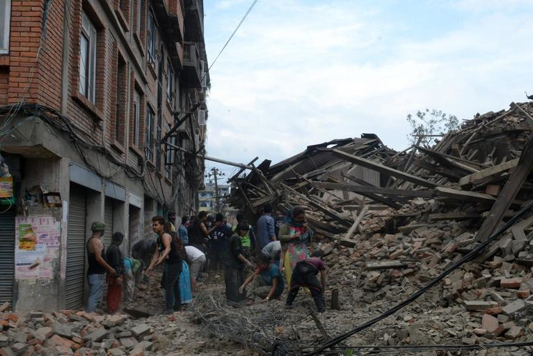
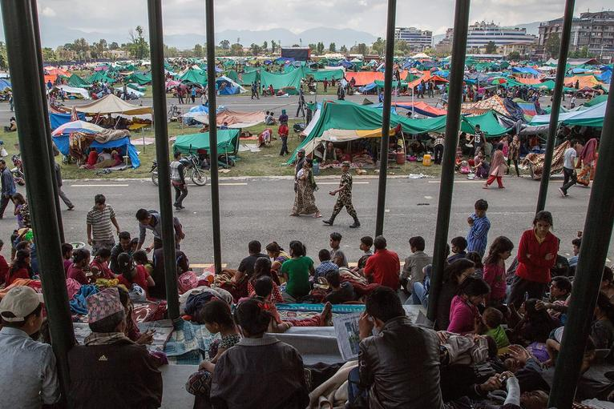

On 25 April 2015, a 7.8 magnitude earthquake hit Nepal. The epicenter of the earthquake lies close to Kathmandu, the capital. Over 8,600 people died in the disastrous event, thousands suffered from injuries and many, many more remain homeless until today. Heavy aftershocks continued to hit the country for weeks.
The damage
The earthquake hit the country in its economic center, namely the north-east of the country. Besides the direct damage done by the earthquake itself, the tremors triggered a huge number of landslides which further destroyed critical infrastructure. The damage was greatest in the districts of Gorkha and Sindhupalchok. In some villages, not a single building was left standing. The earthquake destroyed the livelihoods of many and led to widespread hunger and disease.
Why was the impact so large?
The impact of earthquakes is notoriously larger in developing countries. A poorly developed infrastructure and limited resources for recovery make that tremors can lead to far more damage than they would in other places. Another factor that contributed to the severity of the disaster is the difficult terrain: Nepal is home to a large part of the Himalaya, including the Mount Everest. To put this in a comparative perspective: the US Geological Survey estimates that the same level of severe shaking would lead to 10 to 30 deaths per million residents in California, but could kill 1,000 or more in Nepal (source).